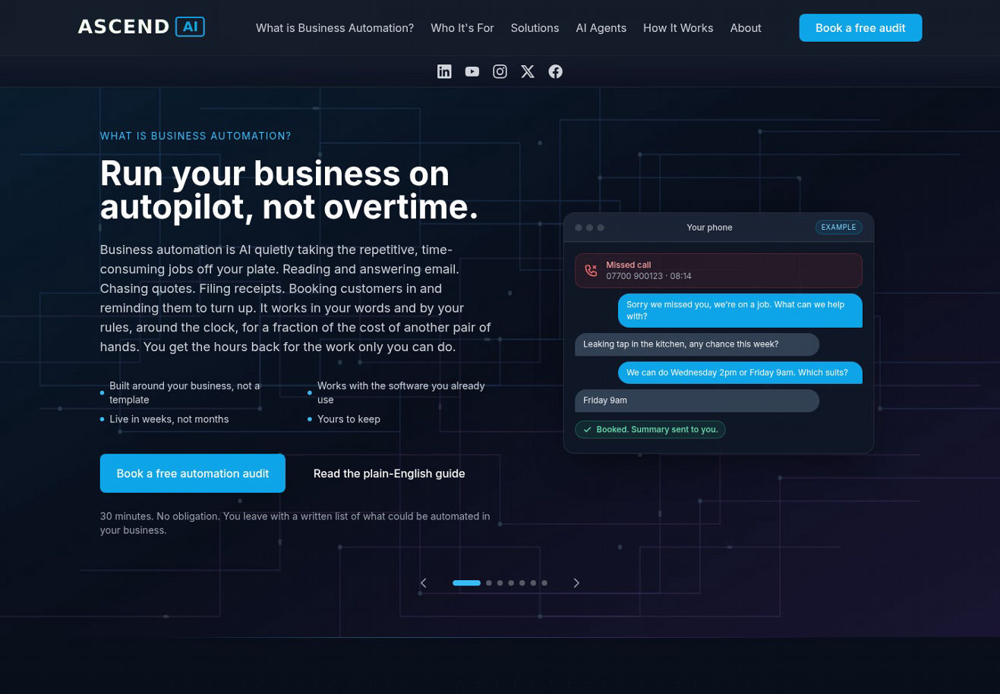

A clearer, more human Ascend AI
Same business.
A stronger first impression.
A calmer dark palette, photography with a purpose, and useful examples brought forward. Explore the proposed Home and Solutions pages beside the current site.
Current site Captured 1 October 2026
Open live ↗
Proposed Interactive preview · scroll to explore
Expand ↗01 / FIRST IMPRESSION
A fixed, focused hero
One clear message, an earlier audit button and a real-world setting that feels relevant to the owner.
02 / VISUAL HIERARCHY
Give each element a job
Cyan for actions and emphasis. Photography for context. Quiet backgrounds for copy and examples.
03 / FINDING THE RIGHT FIT
Make the examples usable
Choose a service and see the problem, the proposed workflow and the decisions that stay with you.
Design exploration, with proposed copy. The live site is unchanged. Examples are illustrative. Detailed findings ↗